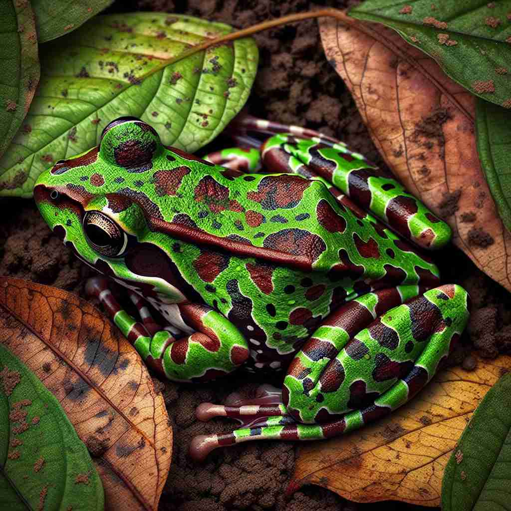

💬 The chameleon can camouflage in the leaves to avoid predators. 变色龙可以在树叶中隐蔽以躲避捕食者。

💬 The frog's camouflage helps it avoid predators. 青蛙的伪装帮助它避开捕食者。
💬 The chameleon can camouflage in the leaves to avoid predators. 变色龙可以在树叶中隐蔽以躲避捕食者。
💬 The frog's camouflage helps it avoid predators. 青蛙的伪装帮助它避开捕食者。
🧠 想象一个物体或人被巧妙地隐藏或改变外观，使其难以被发现。这个核心概念贯穿了'camouflage'的各种用法，无论是动物的保护色、军事伪装，还是掩饰情感，都是为了不被轻易察觉。记住这个核心意义，可以帮助你理解和记忆'camouflage'的多重含义。
🔈 ['kæməflɑːʒ]
🗝️ v. to hide or disguise something by covering it up or changing the way it looks 通过遮盖或改变某物的外观来隐藏或伪装它
🎭 在一个美术课堂上，老师展示了一幅画，画中树叶的形状与背景完全融为一体。她解释道，这是通过改变颜色和纹路来 camouflage 对象，使其难以被发现。
💬 The soldier camouflaged himself with leaves and branches. 士兵用树叶和树枝进行伪装。
🌳 来源于法语词 "camouflage"，由词根 "camou-" (隐蔽) 和后缀 "-flage" （类似于 "foliage"，叶子）结合，表示通过伪装使其隐藏，常用于描述自然界中生物的保护色。
💡 可以联想 "camouflage" 为 "camouflage is like a cover of foliage"，即用叶子般的东西进行遮盖，从而达到隐蔽的目的。这样将其与隐蔽和自然伪装的概念相联系。
🗝️ n. the way an animal's color or shape helps it to blend in with its surroundings 动物的颜色或形状如何帮助它与周围环境融合。
🎭 在非洲草原上，一只豹子趴伏在高草丛中。它的皮毛颜色和周围的植被几乎一致，使它在猎物不注意的情况下悄无声息地靠近，完美地展示了大自然的 camouflage 技巧。
💬 The leopard's spots provide excellent camouflage in the dappled sunlight of the forest. 豹子的斑点在森林斑驳的阳光下提供了极佳的伪装。
🤔 从核心含义的"隐藏"或"伪装"延伸到动物的保护色
🗝️ n. clothes or equipment used to hide soldiers and military vehicles 用来遮掩士兵和军事车辆的服装或装备
🎭 在军事演习的场景中，士兵们都穿着迷彩服，车辆也被涂上与环境相似的颜色，以避免被敌人侦察到。这正是 military camouflage 的应用。
💬 The army issued new camouflage uniforms to the troops. 军队向部队发放了新型迷彩制服。
🤔 从核心含义的"隐藏"延伸到军事用途的伪装物品
🗝️ n. an action or device intended to hide or mislead 一种旨在隐藏或误导的行为或装置
🎭 在间谍电影中，主角使用高科技伪装器，将自己变成了一位保安的模样，以便无缝进入安保严密的设施。这是用来 camouflage 自己身份的策略。
💬 His cheerful manner was just camouflage for his true feelings of anxiety. 他那 cheerful 的举止只是他真实焦虑感受的伪装。
🤔 从核心含义的"伪装"扩展到任何隐藏或误导的行为或手段
🗝️ v. to conceal or disguise one's true feelings or intentions 掩盖或伪装一个人的真实感受或意图
🎭 在一次公司会议上，经理微笑着发表讲话，但内心却对项目进展担忧不已。他巧妙地 camouflage 了自己的真实情绪，以免员工感到不安。
💬 She tried to camouflage her disappointment with a forced smile. 她试图用强颜欢笑来掩饰她的失望。
🤔 从物理上的隐藏延伸到抽象的情感或意图的掩饰